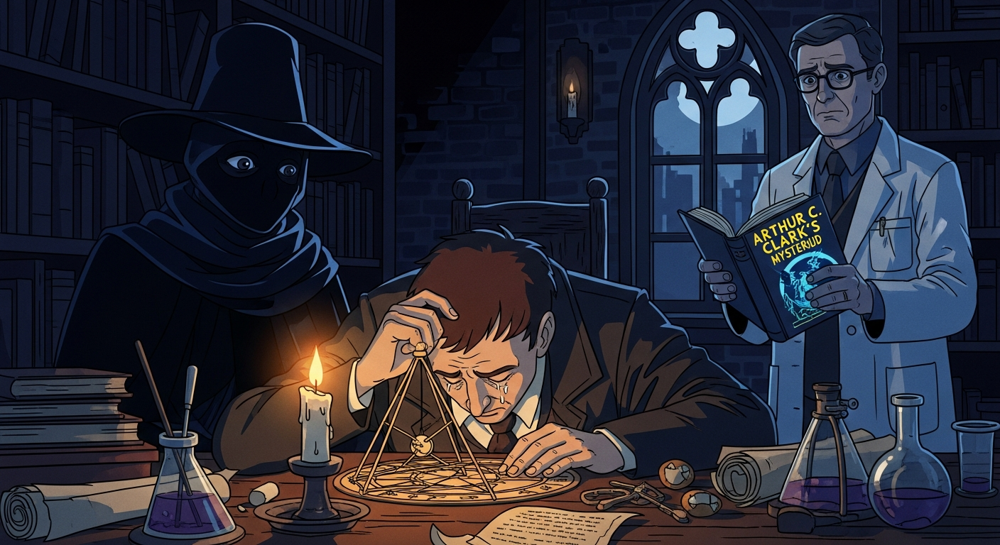
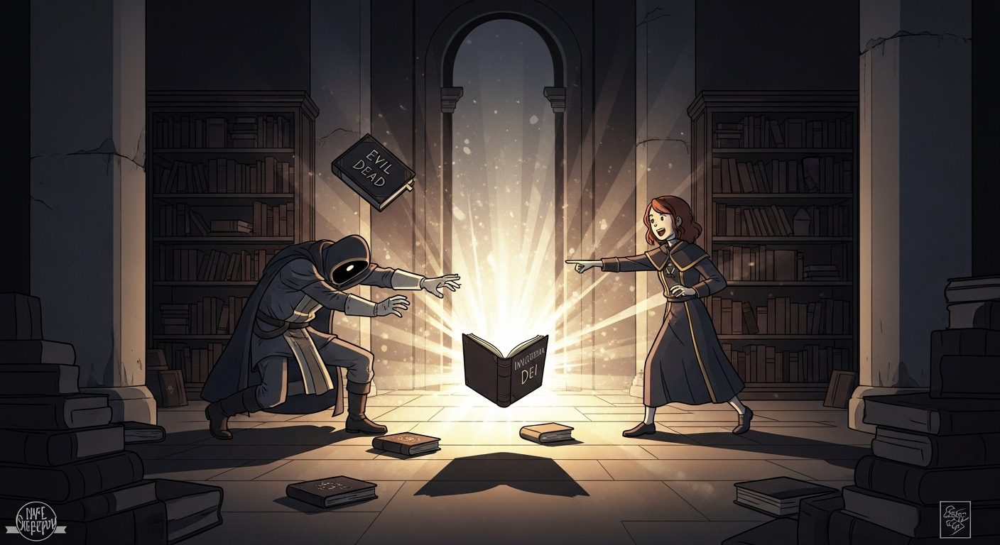

Agrippa, eyes bloodshot, mutters, "The *Picatrix*... *Invisibilia Dei*... It's all just beyond reach! Is true gnosis even possible?" Alexander F. remarks, "Some currents run deeper than reason, Heinrich. Perhaps...divine will dictates who truly sees."

Suddenly, the room crackles. From the *Evil Dead* script—yes, *that* *Evil Dead*—a surge. Dee materializes. “Heinrich, a sign. Not 'random,' but a directed event. Skepticism has its place, but so does the possibility of divine intervention. Investigate, yes, but don't dismiss the unseen hand just because it's…unseen. Progress, Heinrich, sometimes requires a leap of faith, That is to say, Folks.”